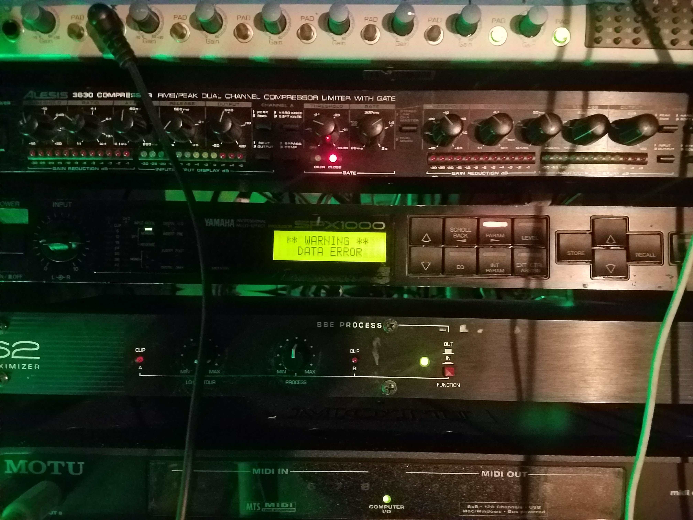

Sweet Geschmack!
About Us
Wilkommen, Band Camper! We are an experimental ambient music group of two human beings from Pennsylvania and New York with softspots for Berlin. We are completely untrained in any specific musical arts but explorers of many.
Music is a joyride. Our songs explore the aural edges of contemporary and classic noise and leave no stone un(b)urned.
Geschmack defined: In German, geschmack means "taste" or "flavor" among other things.
Discography
Das Purple Drain EP, May 2017
- Going down down down
- Plumbers beware
- What goes down must come up
Das Black Shamrock EP, Oct 2017
- You said four was lucky
- One plus one equals three: A lucky love song
- Getting lucky is easy
Das Little Red Lie EP, Jan 2018
- All they do is
- Lies will never hurt me
- Redrum the color